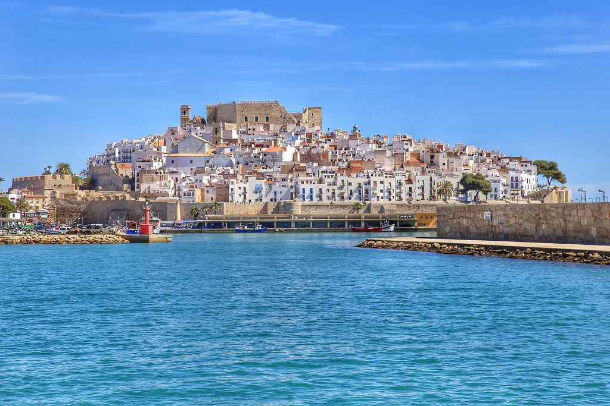
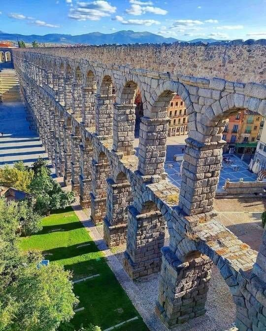

Did you know that Valencia is one of the oldest cities in Spain? It was founded in the second century. B.C, although it was already occupied since ancient times. Due to its fertile lands and its geographical position in the Mediterranean sea, the city has always had a high density of population and it has attracted entire empires. Why not learn Spanish with a castle tour in Valencia. Today we talk about history, about the history of the city that will surely seem to you surprisingly. A story that has remained reflected in many historical relics. An architectural heritage that is the longest and oldest of the province, that has highlighted the importance of Valencia during all periods of history. And there’s nothing better than to look at their history and learn Spanish in Valencia by making this tour of castles from Valencia. Now, there are more than 60 in different stages of conservation, but these are some of the most important. A nice and cultural way to learn Spanish: Castle tour in Valencia.
Take the train and go to Xativa, an hour from the center of Valencia. It originates in the Iberian past of Spain, and the Romans, after conquering Hispania, decided to give more importance to this castle. But why? Just because Xativa was the input for Kingdom Castle and a key point in controlling the kingdom. Later, the Arabs reformed it. It was a significant place for events such important as the conquest of Jaime I, the rebellion of the Germanies and the War of Succession. Castillo de Sagunto en Valencia norte-tour-dei-castelli-di-valencia If Xativa Castle is located in the south of the province, to the north, 35 minutes far by train from the center, is located Sagunto castle. Why not learning Spanish by reading their flyers and their history, that you’ll find all around the monument? Moreover, here is where theTheatre Sagunt a Escena Festival is held. It is huge, more than a kilometer of castle. The conquest of Rome and the arrival of the Arabs was crucial to his later reconstructions.
